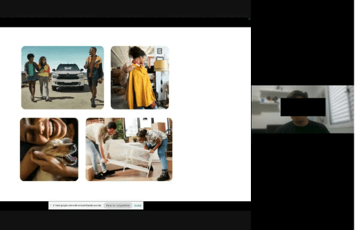
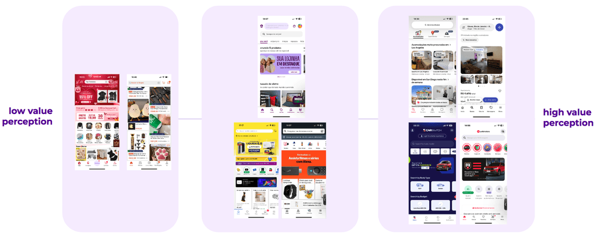
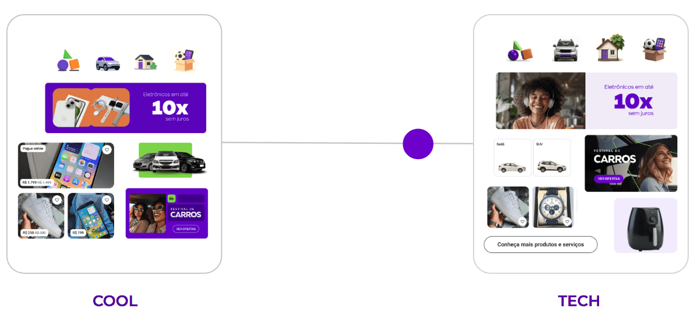
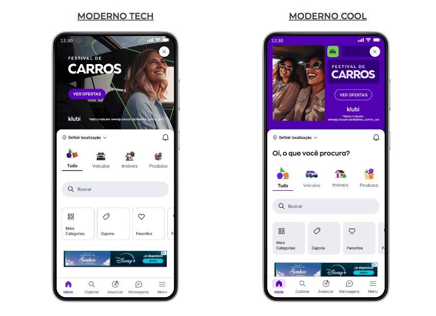
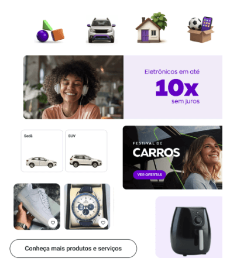
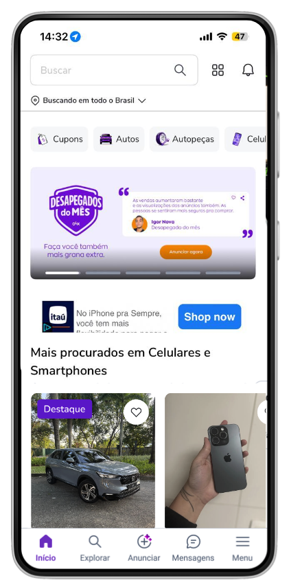
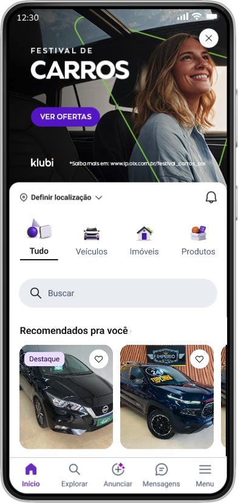

OLX Brasil · Product Design
Redesign
2026

Evolving trust through design
OLX needed to evolve its Look & Feel to reinforce trust, safety, and brand recognition — without losing its historical attributes of approachability, dynamism, and diversity. The challenge was to align interface, communication, and the visual system into a single, consistent narrative, scalable across multiple verticals: Autos, Real Estate, and Goods.
- Visually reposition OLX as a modern, trustworthy, and well-organized platform.
- Balance sobriety and credibility with brand charisma and personality.
- Translate emotional perceptions into clear UI foundations and actionable design guidelines.
Measuring across three dimensions
Safety Index & Brand Health
Qualitative and quantitative tracking of attractiveness, safety, inclusiveness, familiarity, and efficiency via BHT tracking by category cadence.
Banner Click-Through Rates
Increase in banner CTR across the platform as a direct signal of visual effectiveness and content relevance.
Smile Metrics & App Satisfaction
Improvement in safety, ease of use, aesthetics, and efficiency scores — while protecting Mobile Vitals, conversion, and engagement across key flows.
"How can we convey trust, safety, and brand identity through the OLX product?"
Key questionDiscovery — Trust & Safety deep dive
- Analysis of app store reviews to identify recurring trust-related complaints.
- End-to-end user journey mapping to uncover trust breakdown moments.
- Investigation of uninstall reasons to understand how fraud perception impacts retention.
A clear pattern emerged: recurring complaints about fraud, scams, and insecure transactions — reframing trust not only as a visual challenge, but as a systemic perception issue directly impacting retention and brand equity.

Assessment of the competitive landscape to calibrate visual quality, maturity, and aesthetic direction — mapping the spectrum from low to high perceived value across marketplace platforms.

Visual positioning from low value perception (fragmented, noisy) to high value perception (clean, trustworthy)
Co-creating the visual direction
We facilitated co-creation sessions with Product Design, Branding, and Communication teams to redefine how trust and brand identity should be expressed across the experience.
Design principles and usability heuristics were applied to establish new visual foundations — ensuring consistency, clarity, and stronger trust signals throughout the user journey.
Visual diagnosis
Assessment of the current interface to identify visual patterns, inconsistencies, and gaps that weaken perceived trust and clarity.
Design principles applied
- Visual hierarchy and information scannability
- Trustworthiness through whitespace and structure
- Brand consistency across all verticals
- Accessible contrast and type legibility
Comparing two visual directions
Mixed-method research combining qualitative and quantitative methods to compare Modern Tech × Modern Cool among Popular and Premium users across Autos, Real Estate, and Goods categories.



👉 A hybrid visual direction — the clarity and organization of Modern Tech combined with the personality, color, and approachability of Modern Cool.
Design principles made tangible
Typography
Roboto adopted for stronger hierarchy, readability, and a more professional tone. Consistent rules for scale and application across verticals.
Spacing
Increased whitespace to reduce cognitive load and improve scannability. Defined spacing scales and familiarity criteria.
Colors
Purple as primary to reinforce brand identity and convey a sober, trustworthy tone. Greater use of neutrals to support hierarchy and readability.
Border
Adaptive border radius to convey a modern and flexible visual language — consistent across components and contexts.
3D & Motion
Replaced illustrations with scalable 3D icons generated via a custom Gemini bot. Subtle realism and clear feedback for user actions.
Side by side comparison


Arraste para comparar antes e depois
Scaling through the design system
We structured the rollout through the Design System, ensuring scalable application of visual updates via tokens and components. Implementation was coordinated through cross-functional handoffs, with clear success criteria and guardrails to protect core metrics.
- Tokens and components updated in the Design System for scalable rollout
- Cross-functional handoffs with engineering and product teams
- Communication plan to align stakeholders and clarify scope
- Guardrails defined to protect Mobile Vitals, conversion, and engagement
- Consistent application across all product touchpoints
Results that matter
A/B test results validated in live environments across Android & iOS, measuring real behavioral impact from the new visual system.
+0%
Home gallery clickers
+0%
Show Phone Repliers
+0%
Home Impressions
+0%
Goods Chat Replier
+0%
Insertion of seller ads
+0%
Autos Repliers
The new Look & Feel not only improved perceived trust and visual clarity, but also delivered measurable gains for both buyers and sellers — increasing engagement, ad exposure, and contact intent, with stronger impact in the Autos and Goods verticals. These results validate visual design decisions as real product levers, capable of driving business outcomes beyond aesthetics.